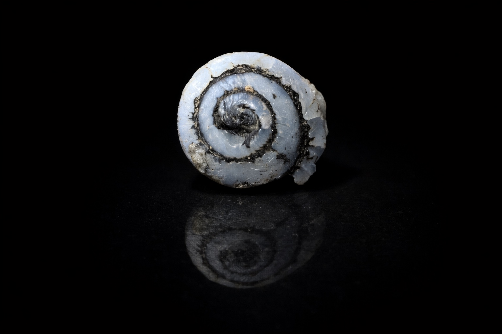

Jeremineralogie
⌕
Boutique
Articles
Archives & Documentation
Ma collection
Carte
Apprendre

Jeremineralogie
Minéraux français, spécimens de collection et patrimoine minier.
Nouveautés
Dernières pièces en boutique
Voir toute la boutique →
Derniers spécimens de la collection
Voir toute la collection →
À lire
Le minéral du jour
Le quiz du jour
Le site en chiffres